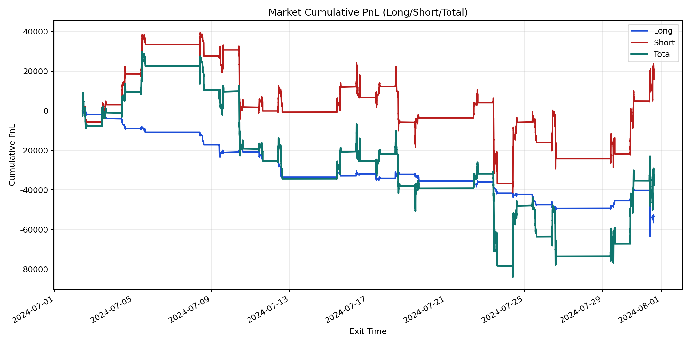
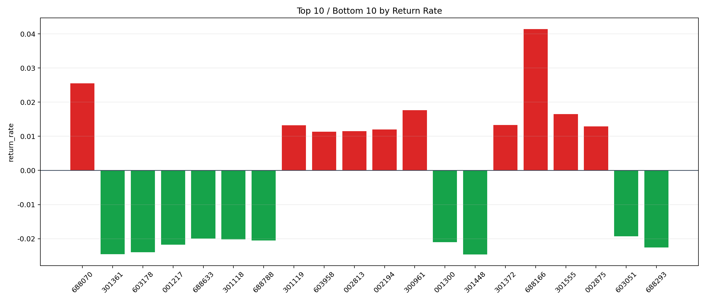

| repo_root | /home/haoranyou/data/output/alpha0.4_1w_5s_3ticks |
|---|---|
| period_months | 1 |
| period_label | 2024-07-02_to_2024-07-31 |
| start_time | 2024-07-02 09:50:17 |
| end_time | 2024-07-31 15:00:00 |
| n_trades | 49582 |
| n_symbols | 1924 |
| total_pnl | -37400.55635000048 |
| long_total_pnl | -53418.12155 |
| short_total_pnl | 16017.565199999528 |
| total_entry_notional | 460480423.0 |
| long_entry_notional | 86853341.0 |
| short_entry_notional | 373627082.0 |
| total_return_rate | -8.122073052821287e-05 |
| long_return_rate | -0.0006150381889166475 |
| short_return_rate | 4.287046087306789e-05 |
| top_symbols_by_return | ["688166", "688070", "300961", "301555", "301372", "301119", "002875", "002194", "002813", "603958"] |
| bottom_symbols_by_return | ["301448", "301361", "603178", "688293", "001217", "001300", "688788", "301118", "688633", "603051"] |

